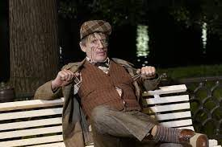
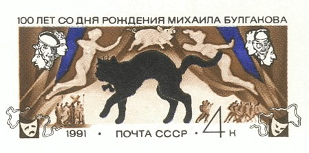

Мастер и Маргарита
«Ма́стер и Маргари́та» — роман Михаила Афанасьевича Булгакова , работа над которым началась в декабре 1928 года и продолжалась вплоть до смерти писателя. Роман относится к незавершённым произведениям; редактирование и сведение воедино черновых записей осуществляла после смерти мужа вдова писателя — Елена Сергеевна. Первая версия романа, имевшая названия «Копыто инженера», «Чёрный маг» и другие, была уничтожена Булгаковым в 1930 году. В последующих редакциях среди героев произведения появились автор романа о Понтии Пилате и его возлюбленная. Окончательное название — «Мастер и Маргарита» — оформилось в 1937 году.
Воланд

Приступив к работе над романом, Булгаков начал собирать материалы, помогающие развитию различных сюжетных линий. В писательском архиве сохранились сложенные в специальную тетрадь листы с заголовком «О дьяволе», в которых содержались отрывки и цитаты из разных изданий — от словаря Брокгауза и Ефрона до книги очерков Михаила Орлова «История сношений человека с дьяволом», вышедшей в 1904 году. По словам Лидии Яновской, «литературная родословная» Воланда обширна и разнообразна, однако среди множества «предшественников» мессира выделяется Мефистофель. Отсылка к персонажу Гёте заявлена уже в эпиграфе в виде прямой цитаты из «Фауста»: «Я — часть той силы, что вечно хочет зла и вечно совершает благо». При этом исследователи отмечали, что первый импульс к созданию образа сатаны дало всё-таки другое произведение — речь идёт об опере Шарля Гуно «Фауст», которую Михаил Афанасьевич любил слушать со времён своего киевского детства.
Азазелло

Азазелло — это персонаж, наделённый «разбойничьей прямотой»[42], образ которого корнями уходит в мифологию (Азазель — «демон пустыни»). Исследователи отмечали, что, согласно материалам книги историка Ивана Яковлевича Порфирьева «Апокрифические сказания о ветхозаветных лицах и событиях», вышедшей в 1872 году, Азазель дал людям навыки по изготовлению холодного оружия, украшений, декоративных средств для ухода за лицом. Булгаков, который, вероятно, был знако́м с этой работой, включил Азазелло в свиту Воланда из-за его «способности к обольщению и убийству».
Коровьев-Фагот
Коровьев появляется на первых страницах романа как гражданин «престранного вида» с «глумливой физиономией». Этот демон легко меняет маски: так, у Берлиоза он просит «четверть литра» для поправки здоровья бывшему регенту; Никанору Ивановичу Босому представляется переводчиком прибывшего в Москву иностранца; в телефонном разговоре, жалуясь «плаксивым голосом» на председателя жилищного товарищества дома № 302-бис, называет себя жильцом одиннадцатой квартиры Тимофеем Квасцовым. «Издевательские провокации и фиглярство» Коровьева столь естественны, что читатель, по замечанию Лидии Яновской, начинает путаться: «Может быть, не Коровьев, а Тимофей Квасцов каким-нибудь чудом звонил в милицию?» Амплуа гаера заставляет персонажа включать в собственный лексикон вульгаризмы: к примеру, во время сеанса чёрной магии он даёт со сцены объявления, насыщенные просторечными оборотами: «Таперича, когда этого надоедалу сплавили, давайте откроем дамский магазин».
Кот Бегемот
Изначально «лучшего из шутов» — кота Бегемота — Булгаков изображал как животное, передвигающееся на «толстых, словно дутых лапах». По предположению исследователей, подобное описание было «позаимствовано» автором из тех источников, которые он изучал при создании портретов персонажей — речь, в частности, идёт о книге Михаила Орлова «История сношений человека с дьяволом», где упоминается бес Бегемот, похожий на «чудище со слоновой головой, хоботом и клыками». В итоговой редакции внешность персонажа изменилась: Иван Бездомный, устремляясь в погоню за Воландом и Коровьевым, видит рядом с ними кота «громадного, как боров, чёрного, как сажа или грач, и с отчаянными кавалерийскими усами».
Гелла

Гелла относится к числу колоритных персонажей, миссия которых в сюжете до конца не прояснена. Рыжеволосая служанка Воланда хороша собой; единственное, что портит её внешность, — это «причудливый шрам на шее», свидетельствующий о том, что смерть женщины была насильственной. С Геллой напрямую сталкивается финансовый директор театра Варьете Римский: после сеанса чёрной магии он выдерживает жёсткую атаку вампирши и остаётся в живых благодаря предрассветному крику петуха, который, согласно поверьям, обладает способностью приводить в содрогание нечистую силу. В этом эпизоде, по словам литературоведа Александра Зеркалова , присутствует аналогия с гоголевским «Вием»: «Освещая Геллу зловещим отсветом панночки, Булгаков обозначает грозное могущество женского начала».